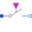
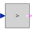

AIMC_SteinmetzAsynchronousInductionMachineSquirrelCage Steinmetz-connection |
|
Diagram
{kind=link}
Information
This information is part of the Modelica Standard Library maintained by the Modelica Association.
At start time tStart single phase voltage is supplied to the asynchronous induction machine with squirrel cage; the machine starts from standstill, accelerating inertias against load torque quadratic dependent on speed, finally reaching nominal speed.
Default machine parameters are used.
Parameters (10)
| VNominal |
Value: 100 Type: Voltage (V) Description: Nominal RMS voltage per phase |
|---|---|
| fNominal |
Value: 50 Type: Frequency (Hz) Description: Nominal frequency |
| tStart1 |
Value: 0.1 Type: Time (s) Description: Start time |
| Cr |
Value: 0.0035 Type: Capacitance (F) Description: Motor's running capacitor |
| Cs |
Value: 5 * Cr Type: Capacitance (F) Description: Motor's (additional) starting capacitor |
| wSwitch |
Value: 1350 * 2 * Modelica.Constants.pi / 60 Type: AngularVelocity (rad/s) Description: Speed for switching off the starting capacitor |
| TLoad |
Value: 2 / 3 * 161.4 Type: Torque (N·m) Description: Nominal load torque |
| wLoad |
Value: 1462.5 * 2 * Modelica.Constants.pi / 60 Type: AngularVelocity (rad/s) Description: Nominal load speed |
| JLoad |
Value: 0.29 Type: Inertia (kg·m²) Description: Load's moment of inertia |
| aimcData |
Value: Type: AIM_SquirrelCageData |
Components (18)
| aimc |
Type: AIM_SquirrelCage |
|
|---|---|---|
| sineVoltage |
Type: SineVoltage |
|
| ground |
Type: Ground |
|
| booleanStep |
Type: BooleanStep |
|
|  | idealCloser |
Type: IdealClosingSwitch |
| loadInertia |
Type: Inertia |
|
| quadraticLoadTorque | ||
| TerminalBox1 |
Type: TerminalBox |
|
| plugToPin_p3 |
Type: PlugToPin_p |
|
| plugToPin_p2 |
Type: PlugToPin_p |
|
| plugToPin_p1 |
Type: PlugToPin_p |
|
| cRun |
Type: Capacitor |
|
| cStart |
Type: Capacitor |
|
| idealOpener |
Type: IdealOpeningSwitch |
|
|  | greaterThreshold |
Type: GreaterThreshold |
| relSpeedSensor |
Type: SpeedSensor |
|
| aimcData |
Type: AIM_SquirrelCageData |
|
| currentQuasiRMSSensor |
Type: CurrentQuasiRMSSensor |